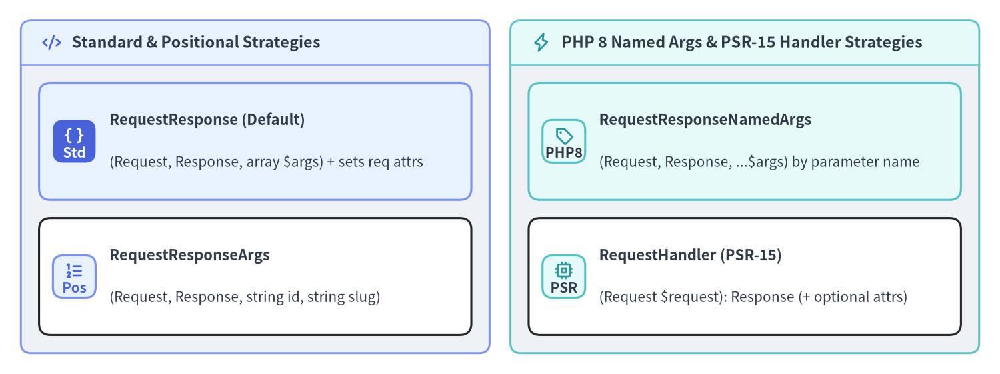
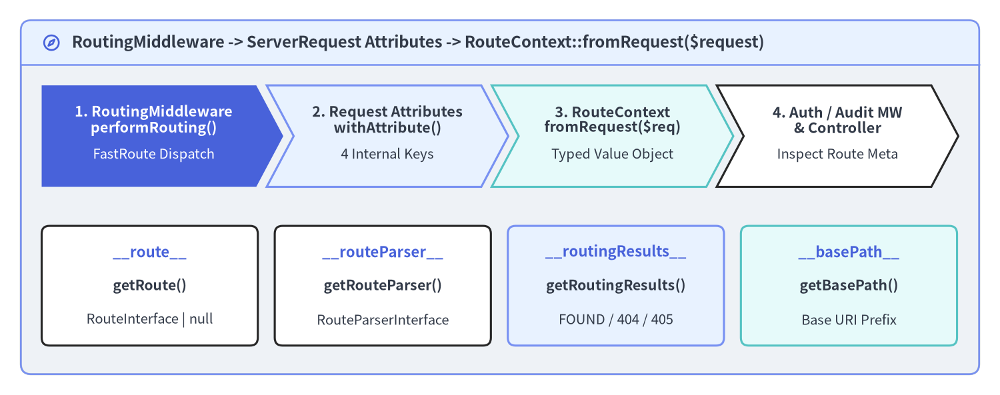

Invocation Strategies & RouteContext
Once FastRoute matches an incoming URI and HTTP verb to a Slim\Routing\Route, Slim does not hardcode a single controller method signature. Instead, Route::run() delegates handler execution to a pluggable Slim\Interfaces\InvocationStrategyInterface implementation, while Slim\Middleware\RoutingMiddleware enriches the PSR-7 ServerRequestInterface with four routing attributes exposed through Slim\Routing\RouteContext. Mastering both mechanisms lets you tailor controller signatures to PHP 8 named parameters or PSR-15 RequestHandlerInterface classes and inspect matched route metadata inside security or observability middlewares.

Source Code
from drawlib.canvas import save, setup
from drawlib.icons import phosphor
from drawlib.smartarts import CardList, Panel
from drawlib.styles import Styles
setup(width=192, height=72, dpi=150)
left_panel = Panel(
"Standard & Positional Strategies",
style=Styles.Neutral.patch(shape_r=2.0),
header_style=Styles.PrimaryNeutral.patch(shape_line_width=1.2),
text_style=Styles.DarkBold.patch(text_size=11.2),
icon=phosphor.code,
icon_style=Styles.PrimaryBold,
header_variant="filled",
header_height=8.5,
)
left_panel.draw((4.0, 4.0), width=90.0, height=64.0)
l_xy, l_w, l_h = left_panel.get_content_box((4.0, 4.0), width=90.0, height=64.0, padding=(3.5, 3.5))
cl_left = CardList(
style=Styles.White,
text_style=Styles.DarkBold.patch(text_size=10.6),
description_style=Styles.Dark.patch(text_size=10.0),
badge_shape="rounded_rect",
badge_style=Styles.PrimaryNeutral,
badge_text_style=Styles.PrimaryBold.patch(text_size=10.0),
icon_style=Styles.PrimaryBold,
direction="vertical",
spacing=3.5,
)
cl_left.add(
"RequestResponse (Default)",
"(Request, Response, array $args) + sets req attrs",
badge_text="Std",
icon=phosphor.brackets_curly,
style=Styles.PrimaryNeutral,
badge_style=Styles.PrimaryFlat,
badge_text_style=Styles.WhiteBold.patch(text_size=10.0),
icon_style=Styles.WhiteBold,
)
cl_left.add(
"RequestResponseArgs",
"(Request, Response, string id, string slug)",
badge_text="Pos",
icon=phosphor.list_numbers,
style=Styles.White,
)
cl_left.draw(xy=l_xy, width=l_w, height=l_h)
right_panel = Panel(
"PHP 8 Named Args & PSR-15 Handler Strategies",
style=Styles.Neutral.patch(shape_r=2.0),
header_style=Styles.SecondaryNeutral.patch(shape_line_width=1.2),
text_style=Styles.DarkBold.patch(text_size=11.2),
icon=phosphor.lightning,
icon_style=Styles.SecondaryBold,
header_variant="filled",
header_height=8.5,
)
right_panel.draw((98.0, 4.0), width=90.0, height=64.0)
r_xy, r_w, r_h = right_panel.get_content_box((98.0, 4.0), width=90.0, height=64.0, padding=(3.5, 3.5))
cl_right = CardList(
style=Styles.White,
text_style=Styles.DarkBold.patch(text_size=10.6),
description_style=Styles.Dark.patch(text_size=10.0),
badge_shape="rounded_rect",
badge_style=Styles.SecondaryNeutral,
badge_text_style=Styles.DarkBold.patch(text_size=10.0),
icon_style=Styles.SecondaryBold,
direction="vertical",
spacing=3.5,
)
cl_right.add(
"RequestResponseNamedArgs",
"(Request, Response, ...$args) by parameter name",
badge_text="PHP8",
icon=phosphor.tag,
style=Styles.SecondaryNeutral,
)
cl_right.add(
"RequestHandler (PSR-15)",
"(Request $request): Response (+ optional attrs)",
badge_text="PSR",
icon=phosphor.cpu,
style=Styles.White,
)
cl_right.draw(xy=r_xy, width=r_w, height=r_h)
save()
Built-In Invocation Strategies (Slim\Handlers\Strategies\)
Slim ships with four built-in implementations of Slim\Interfaces\InvocationStrategyInterface. You can set the default strategy across the entire application via $app->getRouteCollector()->setDefaultInvocationStrategy(...) or override it on an individual route via $route->setInvocationStrategy(...):
Strategy Class (Slim\Handlers\Strategies\*) |
Handler Callable Signature | How Route Arguments ($routeArguments) Are Passed |
|---|---|---|
RequestResponse (Default) |
fn(Request $req, Response $res, array $args): Response |
Injects every $k => $v into $req->withAttribute($k, $v) and passes $args as the 3rd argument |
RequestResponseArgs |
fn(Request $req, Response $res, string $id, ...): Response |
Unpacks route values positionally via ...array_values($routeArguments) |
RequestResponseNamedArgs |
fn(Request $req, Response $res, string $slug, string $id): Response |
Unpacks route values by name via PHP 8 ...$routeArguments (order-independent) |
RequestHandler |
fn(Request $req): Response |
Passes only $req (optionally injects $routeArguments into $req attributes when constructed with true) |
[!TIP] Automatic PSR-15
RequestHandlerInterfaceDetection inRoute::handle(): Even when the default invocation strategy isRequestResponse,Slim\Routing\Route::handle()checksif ($callable instanceof RequestHandlerInterface)right after resolving the route callable from the PSR-11 container. If your Single-Action Controller implementsPsr\Http\Server\RequestHandlerInterface, Slim invokes$callable->handle($request)directly. If you want route placeholders ({id}) automatically copied into$request->getAttribute('id')for those handlers, configurenew RequestHandler(appendRouteArgumentsToRequestAttributes: true)as your default strategy.
<?php
declare(strict_types=1);
use Psr\Http\Message\ResponseInterface as Response;
use Psr\Http\Message\ServerRequestInterface as Request;
use Slim\Factory\AppFactory;
use Slim\Handlers\Strategies\RequestHandler;
use Slim\Handlers\Strategies\RequestResponseArgs;
use Slim\Handlers\Strategies\RequestResponseNamedArgs;
$app = AppFactory::create();
$routeCollector = $app->getRouteCollector();
// Option A: Use PHP 8 named argument unpacking as the application-wide default
$routeCollector->setDefaultInvocationStrategy(new RequestResponseNamedArgs());
// Parameter order ($slug, $year) does not need to match URL order ({year}/{slug})!
$app->get(
'/posts/{year:[0-9]{4}}/{slug:[a-z0-9-]+}',
function (Request $request, Response $response, string $slug, string $year): Response {
$payload = json_encode(['year' => (int) $year, 'slug' => $slug], JSON_THROW_ON_ERROR);
$response->getBody()->write($payload);
return $response->withHeader('Content-Type', 'application/json');
}
);
// Option B: Override strategy on a single route with positional unpacking
$app->get(
'/orgs/{orgId}/members/{memberId}',
function (Request $request, Response $response, string $orgId, string $memberId): Response {
$payload = json_encode(['org' => $orgId, 'member' => $memberId], JSON_THROW_ON_ERROR);
$response->getBody()->write($payload);
return $response->withHeader('Content-Type', 'application/json');
}
)->setInvocationStrategy(new RequestResponseArgs());
// Option C: Pure PSR-15 RequestHandler signature with route args in request attributes
$app->get('/items/{id:[0-9]+}', function (Request $request): Response {
$id = (int) $request->getAttribute('id');
$response = new \Slim\Psr7\Response();
$response->getBody()->write(json_encode(['item_id' => $id], JSON_THROW_ON_ERROR));
return $response->withHeader('Content-Type', 'application/json');
})->setInvocationStrategy(new RequestHandler(appendRouteArgumentsToRequestAttributes: true));
Writing a Custom Invocation Strategy
If your team prefers controllers that return associative arrays or JsonSerializable DTOs and wants Slim to serialize them into PSR-7 JSON responses automatically, you can implement Slim\Interfaces\InvocationStrategyInterface:
<?php
declare(strict_types=1);
namespace App\Routing;
use JsonSerializable;
use Psr\Http\Message\ResponseInterface;
use Psr\Http\Message\ServerRequestInterface;
use Slim\Interfaces\InvocationStrategyInterface;
final class JsonAutoSerializeStrategy implements InvocationStrategyInterface
{
/**
* @param array<string, string> $routeArguments
*/
public function __invoke(
callable $callable,
ServerRequestInterface $request,
ResponseInterface $response,
array $routeArguments
): ResponseInterface {
foreach ($routeArguments as $key => $value) {
$request = $request->withAttribute($key, $value);
}
$result = $callable($request, $response, $routeArguments);
if ($result instanceof ResponseInterface) {
return $result;
}
if (is_array($result) || $result instanceof JsonSerializable) {
$json = json_encode($result, JSON_THROW_ON_ERROR | JSON_UNESCAPED_SLASHES);
$response->getBody()->write($json);
return $response->withHeader('Content-Type', 'application/json');
}
return $response;
}
}
Inspecting RouteContext in Middleware
In Slim 4, route resolution is decoupled from RouteRunner into Slim\Middleware\RoutingMiddleware. When RoutingMiddleware::performRouting() executes, it computes the FastRoute match and attaches four internal attributes to the ServerRequestInterface so any downstream middleware or controller can call RouteContext::fromRequest($request):

Source Code
from drawlib.canvas import save, setup
from drawlib.icons import phosphor
from drawlib.shapes import rectangle
from drawlib.smartarts import ChevronProcess, Panel
from drawlib.styles import Styles
from drawlib.text import text
setup(width=192, height=76, dpi=150)
outer = Panel(
"RoutingMiddleware -> ServerRequest Attributes -> RouteContext::fromRequest($request)",
style=Styles.Neutral.patch(shape_r=2.0),
header_style=Styles.PrimaryNeutral.patch(shape_line_width=1.2),
text_style=Styles.DarkBold.patch(text_size=11.5),
icon=phosphor.compass,
icon_style=Styles.PrimaryBold,
header_variant="filled",
header_height=8.5,
)
outer.draw((4.0, 4.0), width=184.0, height=68.0)
proc = ChevronProcess(
style=Styles.White,
text_style=Styles.DarkBold.patch(text_size=10.4),
description_style=Styles.Dark.patch(text_size=9.8),
corner_angle=62.0,
spacing=2.0,
flat_left_end=True,
)
proc.add(
"1. RoutingMiddleware\nperformRouting()",
description="FastRoute Dispatch",
style=Styles.PrimaryFlat,
text_style=Styles.WhiteBold.patch(text_size=10.4),
description_style=Styles.White.patch(text_size=9.8),
)
proc.add(
"2. Request Attributes\nwithAttribute()",
description="4 Internal Keys",
style=Styles.PrimaryNeutral,
)
proc.add(
"3. RouteContext\nfromRequest($req)",
description="Typed Value Object",
style=Styles.SecondaryNeutral,
)
proc.add(
"4. Auth / Audit MW\n& Controller",
description="Inspect Route Meta",
style=Styles.White,
)
proc.draw(xy=(8.0, 40.0), width=176.0, height=19.5)
cards = [
(28.75, Styles.White, "__route__", "getRoute()", "RouteInterface | null"),
(73.50, Styles.White, "__routeParser__", "getRouteParser()", "RouteParserInterface"),
(118.25, Styles.PrimaryNeutral, "__routingResults__", "getRoutingResults()", "FOUND / 404 / 405"),
(163.00, Styles.SecondaryNeutral, "__basePath__", "getBasePath()", "Base URI Prefix"),
]
for cx, c_style, attr_key, method_name, ret_desc in cards:
rectangle((cx, 21.0), width=41.5, height=23.0, style=c_style.patch(shape_r=1.5))
text((cx, 27.5), attr_key, style=Styles.PrimaryBold.patch(text_size=10.6))
text((cx, 21.0), method_name, style=Styles.DarkBold.patch(text_size=10.2))
text((cx, 14.5), ret_desc, style=Styles.Dark.patch(text_size=9.8))
save()
RouteContext Constant |
Request Attribute Key | RouteContext Accessor |
Returned Type & Guarantees |
|---|---|---|---|
RouteContext::ROUTE |
'__route__' |
getRoute(): ?RouteInterface |
Matched RouteInterface (or null if FastRoute returned NOT_FOUND / METHOD_NOT_ALLOWED) |
RouteContext::ROUTE_PARSER |
'__routeParser__' |
getRouteParser(): RouteParserInterface |
Always populated; generates URLs via urlFor(), relativeUrlFor(), fullUrlFor() |
RouteContext::ROUTING_RESULTS |
'__routingResults__' |
getRoutingResults(): RoutingResults |
Always populated; provides getRouteStatus(), getRouteArguments(), getAllowedMethods() |
RouteContext::BASE_PATH |
'__basePath__' |
getBasePath(): string |
Always populated with $app->getBasePath() (defaults to '') |
[!WARNING] Why
RoutingMiddlewareMust Run BeforeRouteContext::fromRequest(): If a custom application middleware callsRouteContext::fromRequest($request)beforeRoutingMiddlewarehas executed, Slim throws aRuntimeException(Cannot create RouteContext before routing has been completed). Because$app->add()uses a Last-In, First-Out (LIFO) stack, any application-wide middleware that needsRouteContextmust either be registered before$app->addRoutingMiddleware()(so it sits insideRoutingMiddlewarein the onion) or attached directly to aRouteGroup/Route(which always executes insideRouteRunner, afterRoutingMiddleware).
<?php
declare(strict_types=1);
namespace App\Middleware;
use Psr\Http\Message\ResponseInterface as Response;
use Psr\Http\Message\ServerRequestInterface as Request;
use Psr\Http\Server\MiddlewareInterface;
use Psr\Http\Server\RequestHandlerInterface as RequestHandler;
use Slim\Exception\HttpForbiddenException;
use Slim\Routing\RouteContext;
final class RoutePermissionGuardMiddleware implements MiddlewareInterface
{
public function process(Request $request, RequestHandler $handler): Response
{
$routeContext = RouteContext::fromRequest($request);
$route = $routeContext->getRoute();
// Always guard against null in case an outer middleware runs on unmatched routes
if ($route === null) {
return $handler->handle($request);
}
$routeName = $route->getName() ?? 'unnamed';
$targetUserId = $route->getArgument('id');
$actorRole = (string) $request->getAttribute('auth_role', 'guest');
if (str_starts_with($routeName, 'admin.') && $actorRole !== 'admin') {
throw new HttpForbiddenException(
$request,
sprintf('Role "%s" is not permitted to access route "%s" (id=%s).', $actorRole, $routeName, (string) $targetUserId)
);
}
return $handler->handle($request);
}
}
Running Slim in a Sub-Directory (setBasePath)
When your Slim application is mounted under a URL sub-path (for example, https://example.com/myapp/api/v1/users behind an alias or shared virtual host) rather than the domain root (/), configure $app->setBasePath('/myapp') during bootstrap:
- No Leading Prefix in Route Definitions: Continue defining routes relative to the application root (
$app->get('/api/v1/users', ...)).RoutingMiddlewareautomatically stripsbasePathfrom the incoming request URI path before passing it to FastRoute. - Automatic Prefixing in
urlFor():RouteParser::urlFor()andRouteParser::fullUrlFor()automatically prependbasePathso generated links andLocationheaders resolve to/myapp/api/v1/users.
<?php
declare(strict_types=1);
use Slim\Factory\AppFactory;
$app = AppFactory::create();
// Strip "/myapp" during FastRoute matching and prepend it in RouteParser::urlFor()
$app->setBasePath('/myapp');
$app->addRoutingMiddleware();
$app->addErrorMiddleware(true, true, true);
// Matches GET https://example.com/myapp/status without hardcoding "/myapp" in the route
$app->get('/status', static function ($request, $response) {
$basePath = \Slim\Routing\RouteContext::fromRequest($request)->getBasePath();
$response->getBody()->write(json_encode(['base_path' => $basePath], JSON_THROW_ON_ERROR));
return $response->withHeader('Content-Type', 'application/json');
});
Next, proceed to Chapter 4: PSR-7 Requests, Responses & Streams to master PSR-7 immutability, BodyParsingMiddleware, file streaming, and ResponseEmitter, or review InvocationStrategyInterface and RouteContext class details in the Slim 4 API Reference and Slim 4 Internal Architecture portals.